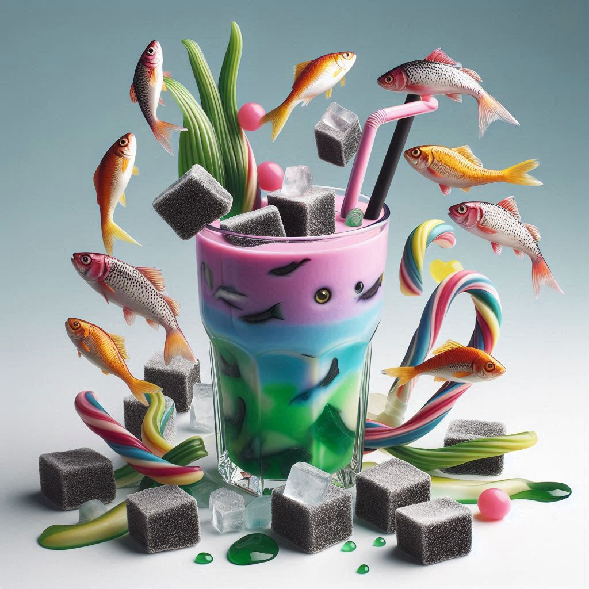

Smoothie di pesce e liquirizia
Ingredienti:
- 200 g di filetti di acciughe sott'olio
- 250 ml di succo di carota
- 100 ml di latte di mandorla
- 1 cucchiaio di sciroppo di liquirizia
- 1 banana matura
- Ghiaccio q.b.
Preparazione:
- Frullare insieme i filetti di acciughe, il succo di carota, il latte di mandorla e il ghiaccio.
- Aggiungere la banana e il cucchiaio di sciroppo di liquirizia.
- Frullare nuovamente fino a ottenere una consistenza omogenea.
- Servire in un bicchiere alto con una cannuccia